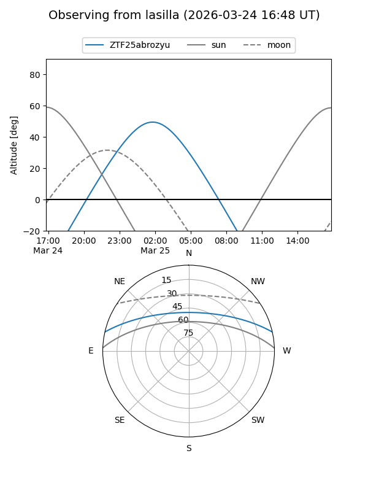
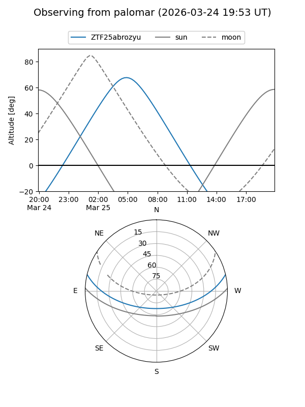

ZTF25abrozyu
Target ZTF25abrozyu at 2026-03-25 08:08
Aliases and brokers:
FINK: link
Lasair: link
ALeRCE: link
alt names
ZTF25abrozyu (ztf,fink_ztf)
Coordinates:
equatorial (ra, dec) = 138.2560,+11.27982
equatorial (HMS+DMS) = 09:13:01.45,+11:16:47.35
galactic (l, b) = (218.9967,+36.49429)
Flags:
Photometry:
last ztfg=16.50
1 ztfg detections
Lightcurve
Visibility


Additional plots